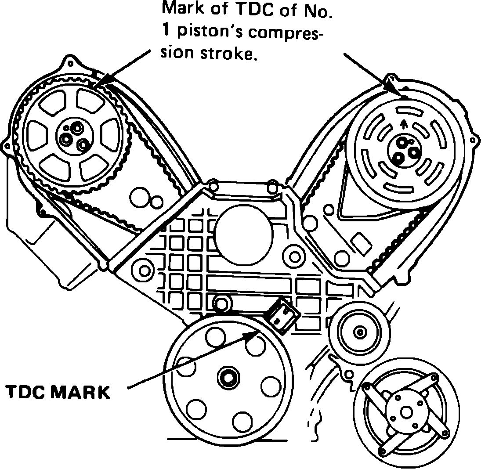
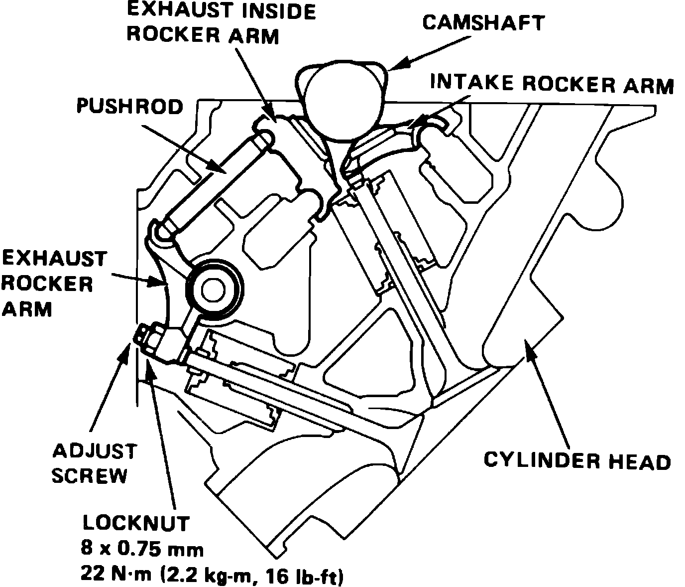
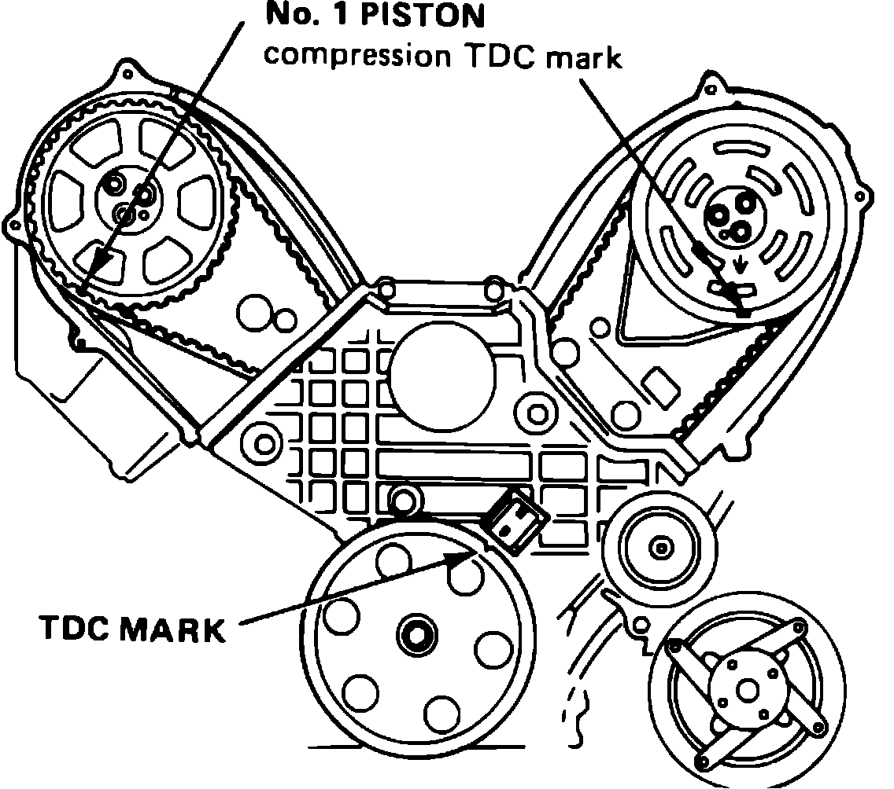

Valve Clearance: Adjustments
Fig. 3 Positioning No. 1 Cylinder At TDC Of Compression Stroke:

Fig. 4 Valve Adjusting Screw Location:

Fig. 5 Positioning No. 5 Cylinder At TDC Of Compression Stroke:

This engine uses hydraulic valve lifters which do not normally require adjustment. However, if cylinder head or valves require service, they should be adjusted as outlined below.
1. Position front and rear camshafts at TDC of compression stroke of cylinder No. 1, Fig. 3.
2. Tighten cylinder No. 1 adjusting screw until screw contacts valve, then tighten an additional 1.5 turns and torque locknut to 16 ft. lbs., Fig. 4.
3. Repeat adjustment sequence for Nos. 2 and 4 cylinders.
4. Rotate crankshaft clockwise one full turn, then adjust cylinders Nos. 3, 5 and 6, ensuring timing marks are properly positioned, Fig. 5.